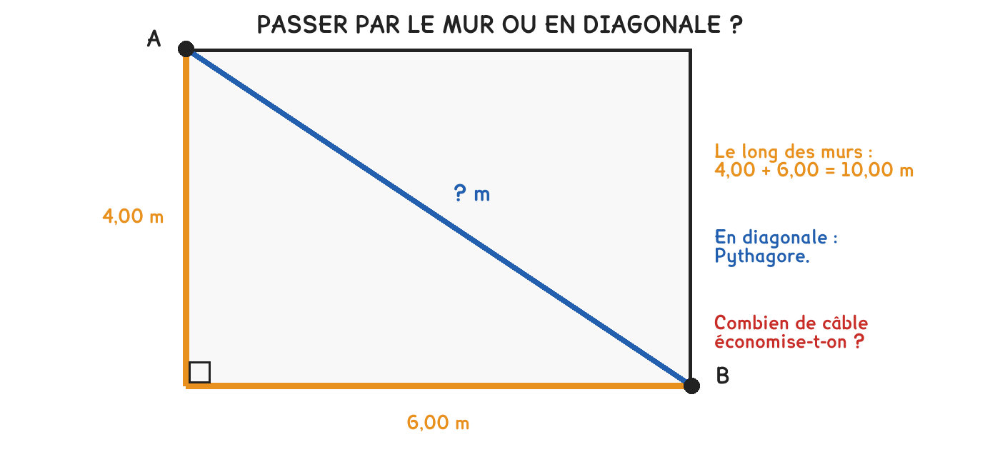

GE Géométrie — théorème de Pythagore et sa réciproqueCN Calculs numériques — racine carrée
La méthode, en quatre temps
Je vérifie qu’il y a bien un angle droit : sans lui, Pythagore ne s’applique pas.
L’hypoténuse est le côté en face de l’angle droit, toujours le plus long.
J’élève les deux côtés au carré, je les additionne, puis je prends la racine.
Je vérifie : l’hypoténuse doit être plus longue que chacun des deux autres côtés.

Le contrôle final est gratuit et il attrape presque tout. Si votre diagonale est plus courte qu’un côté, le calcul est faux, vous avez soustrait au lieu d’additionner, ou oublié la racine.
Un local de 6 m sur 4 m
L’étape
Le calcul
Résultat
Les carrés
6² = 36 et 4² = 16
La somme
36 + 16
52
La racine
√52
7,21 m
Je vérifie
7,21 est plus grand que 6 et que 4
✔
On oublie la racine. Beaucoup s’arrêtent à 52 et écrivent « 52 m » : une diagonale de 52 m dans un local de 6 m sur 4 m. Le contrôle du temps 4 l’attrape immédiatement, 52 est bien plus grand que 6, mais démesurément.
Pour aller plus loin
Le 3-4-5, et pourquoi les maçons s'en serventPour aller plus loin›
Un triangle de côtés 3, 4 et 5 est rectangle : 9 + 16 = 25. C’est vérifiable au décamètre, sans équerre et sans calculatrice.
Sur le terrain, on mesure 3 m sur un côté, 4 m sur l’autre, et on ajuste jusqu’à lire exactement 5 m entre les deux repères. L’angle est alors droit.
Pour plus de précision on double tout : 6, 8 et 10. Plus les longueurs sont grandes, plus l’erreur d’angle correspondant à un centimètre d’écart est petite, c’est pourquoi on n’implante jamais un bâtiment sur un triangle de 3 m.
Je m’entraîne
Les mêmes séries que sur la feuille. On remplit chaque case, puis on vérifie la série entière d’un coup.
Série · GE
Série 1, trouver l’hypoténuse
côtés 3 et 4
côtés 6 et 8
côtés 5 et 12
côtés 2 et 3
On additionne les deux carrés, puis on prend la racine. Les trois premières tombent juste, la dernière non.
Série · GE
Série 2, les carrés, puis la racine
5²
12²
la somme des deux
la racine de cette somme
9²
la somme de 9² et 12²
la racine de cette somme
Trois temps, dans l’ordre : les carrés, la somme, la racine. Jamais deux d’un coup.
Le quiz
L’hypoténuse est : le plus court | le plus long côté
Sans angle droit, Pythagore : s’applique | ne s’applique pas
Un triangle de côtés 3, 4 et 5 est : rectangle | quelconque
Côtés 6 et 8 : l’hypoténuse vaut : 14 | 10 | 100
À vous
Pour vérifier qu’une implantation est d’équerre, on mesure 3 m sur un côté, 4 m sur l’autre, puis la diagonale.
Exercice · GE
La diagonale attendue
Quelle diagonale doit-on lire si l’angle est bien droit ?
3² + 4², puis la racine. Celle-là tombe juste.
Exercice · GE
Un local de 8 m sur 6 m
Quelle est la diagonale de ce local ?
C’est le triangle 3-4-5, doublé. La diagonale tombe juste aussi.
Exercice · GE
Un local carré de 5 m
Quelle est la diagonale d’un local de 5 m sur 5 m, au centième ?
25 + 25, puis la racine. Celle-ci ne tombe pas juste.
Exercice · GE
Les 5,20 m qu’on a mesurés
Sur le contrôle 3-4-5, on lit 5,20 m au lieu de 5 m. L’implantation est-elle d’équerre ? Dites ce qu’il faut faire.
Comparez la mesure à la valeur que vous venez de calculer. L’écart est-il acceptable pour une implantation ?
J’ai dit que non, ce n’est pas d’équerre
J’ai comparé les 5,20 m mesurés aux 5 m attendus
J’ai dit qu’il faut reprendre l’implantation avant de creuser
Pour les plus courageux
Deux triangles qui tombent juste, et il faut les reconnaître avant de calculer.
Exercice · GE
Un local de 12 m sur 9 m
Quelle diagonale doit-on lire pour que ce local soit d’équerre ?
9, 12 et… c’est le 3-4-5 multiplié par trois. Le résultat tombe juste.
Exercice · GE
Pourquoi implanter en grand
Sur un contrôle à 3 m et 4 m, une erreur de 2 cm sur la diagonale est difficile à voir. Sur un contrôle à 9 m et 12 m, la même erreur d’angle donne un écart bien plus grand. Expliquez pourquoi on implante en grand.
Imaginez le même défaut d’angle, une fois sur 3 m et une fois sur 9 m. Où l’écart se voit-il le mieux ?
J’ai dit que les deux triangles ont la même forme
J’ai dit qu’un même angle faux donne un écart plus grand quand les côtés sont longs
J’ai conclu qu’on mesure aussi loin que le terrain le permet
Fiche de consolidation. Aucun corrigé ; rien n'est enregistré, rien n'est noté.